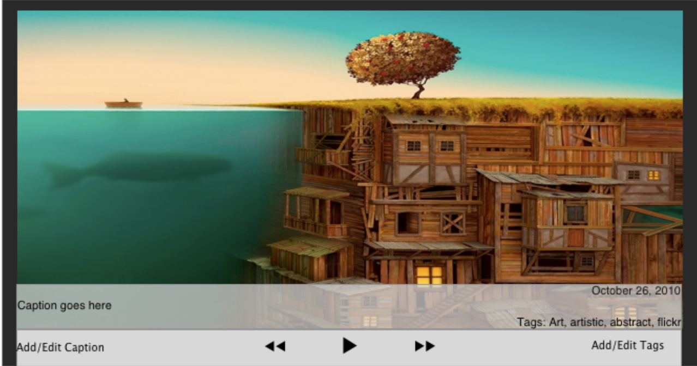
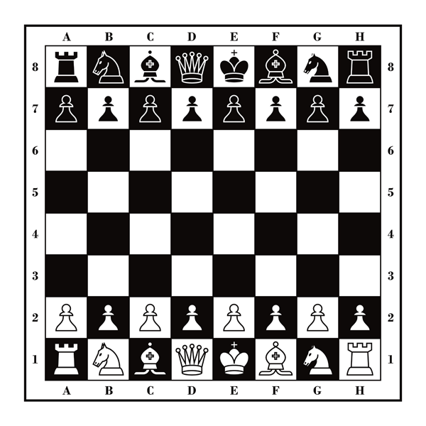

JAVA(Object Oriented Programming)
Java is a mid-level programming language that focuses more on building applications that can run on multiple platforms rather than taking control of the internals of the computer. It is in my opinion a great way to first introduce yourself into computer programming and learn about/practice the most commonly used data structures. This is the first language I learned when I chose computer science as my major of study and it made things a lot easier to understand. I learned all about the different data structures there are ranging from basic arrays to building complex graphs. Throughout my studies in computer science I have been able to implement all of these data structures in the problems that were thrown my way.
Photo Album
My first true software project dealt with building a working image viewer. This application allowed users to import photos from their desktop into an albumn of their choosing and give it a caption as well as multiple tags. The capabilities in the users hands were things they were familiar with such as adding/deleting a picture or albumn. We did not want to do anything too fancy or out of the ordinary because we wanted the application to be used by everyone no matter what their technical background is. I, however, would love to jump in the realm of innovation and create a new norm.
Android Chess
The chess project we worked on really tested our knowledge of object oriented programming and inheritence. There are so many different pieces in chess that have different moves but all share some qualities. We made a master class called Piece which would get implemented by each subclass/piece. This was important because when we built the board for the pieces to go on they all had to have the same functions to work. The board was of type Piece but since we had each different piece implement that class we could instantiate each different piece on the board. After building the backbone of the whole application we merged the code over to the android platform and we really saw the project come to life. Viewing an application through the command line/terminal is one thing but to be able to view something physical that could potentially be in many users hands across the globe was what drove to love software development.
Client/Server Chat Room
The realm of TCP/IP and Internet Technology really brought my curiosity but also creativity out. The client-server chatroom I built allowed me to fully understand how TCP works and sends datagram packets back and forth through machines/routers. The chat room consisted of one running server that would accept clients constantly. Each client that connected will get a copy of the previous conversation that took place before they joined so they would be able to catch up. Another feature that is commonly used in chat is the ability to private message someone. Although this was application was developed strictly for command line/terminal use, I still wanted to bring it alive with vibrate colors for each user in the room and show server status.
File Transfer
The final project internet technology project I worked on delved into the intricacies of UDP and the different broadcasting methods that were available through this method of communication. A simple file transfer program was built to be able to send a file from one computer to another using UDP. The main focus here was to make sure every file to arrive was complete and in order. Since the computers were on the same hub/router packet loss was not likely to happen but we simulated it by giving a percent rate of when it should drop the packet. This pushed the program to ask for the packets it did not recieve and make sure it was placed in the correct spot in the file.